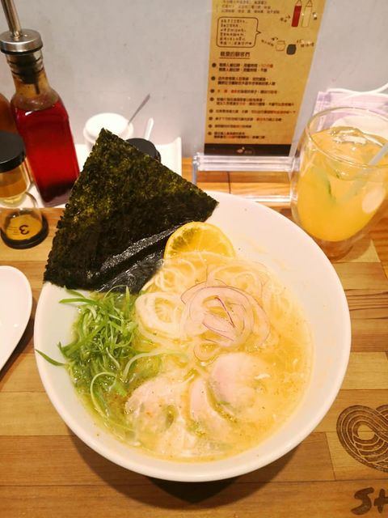

Top 10 of Best Ramen Restaurant in Taiwan from Taiwan Ramen Club. Popular with female customers.
Light and elegant. Quite different from traditional ramen. Remember to remove the citrus slices from the broth in 1 min to prevent the peel makes the broth become too bitter. You might not be used to the taste if you tend to enjoy ramen with thick flavor.
